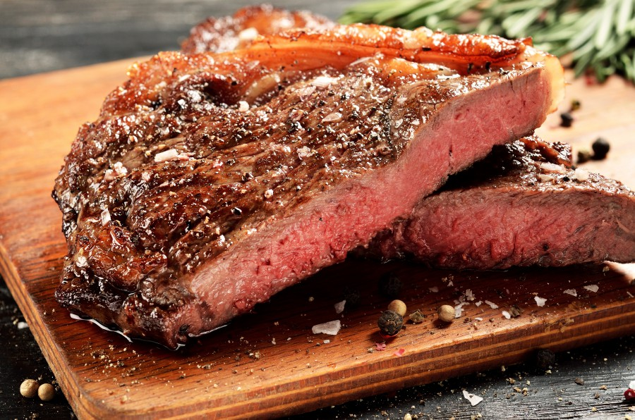
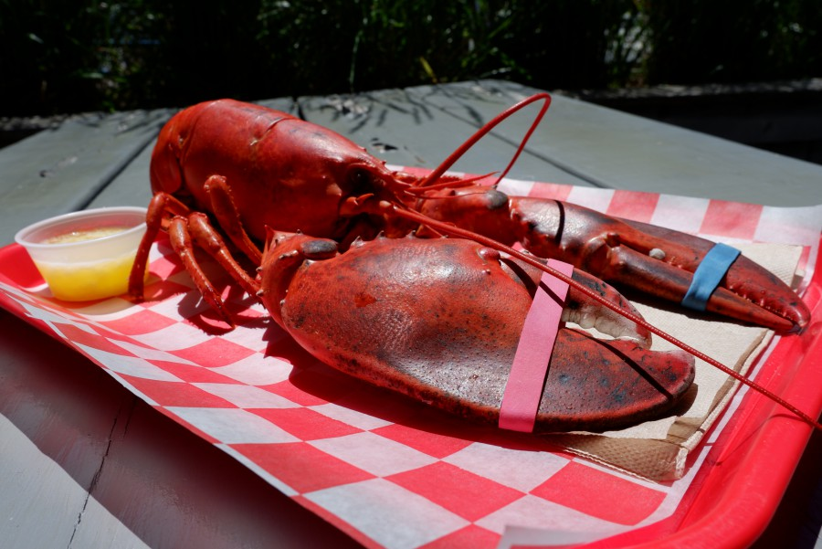
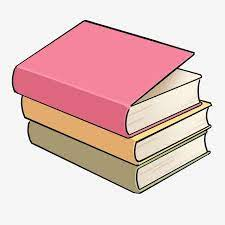
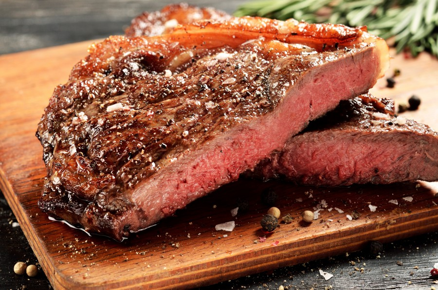
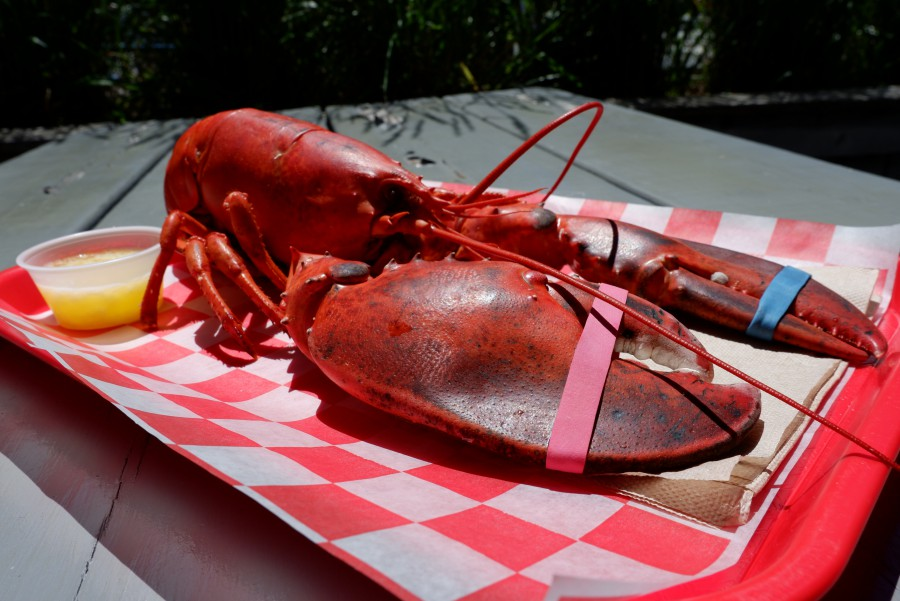
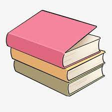
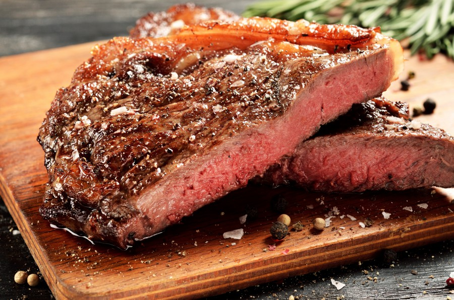
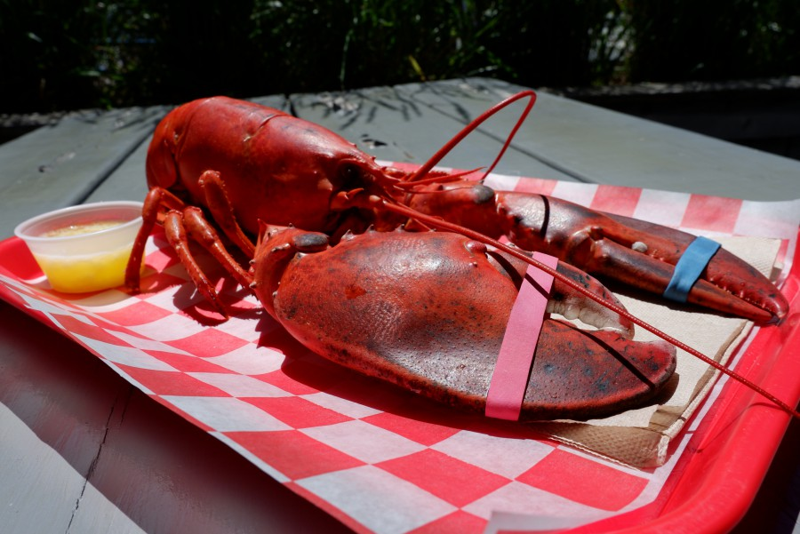
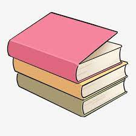

肥嫩的龍蝦、經典的餐車文化、墨西哥料理等，怎麼能錯過。
除了紅遍全球的Shake shack、Peter Lugar。
更別說千層蛋糕界的LV——LADY M了。
通通在這篇一次告訴你。
。
  
漢堡介紹 牛排介紹 龍蝦介紹 熱狗介紹
練習用音樂、影片
Your browser does not support the audio element. Your browser does not support the video tag.
 




